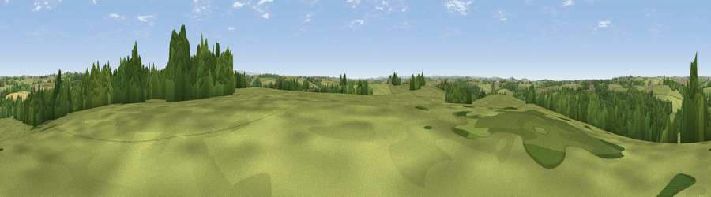

Viewpoint near Clawton
#29320 in England · top 61% of its area beats it · near ClawtonThe view, rendered

A 360° render of this exact spot computed from the terrain model, tree cover and land cover — summer colours, afternoon light, calibrated against photographs of famous viewpoints. Real trees, hedges and buildings will differ in detail.
The panorama
Grey silhouette: terrain skyline in each direction (720 bearings, Earth curvature and refraction included). Dashed green: skyline with trees (+15 m) and buildings (+8 m) as obstacles. Blue strip: how far the ground is visible on each bearing.
Where the view opens
Wedge length = distance to the farthest visible ground on that bearing (vegetation-aware). Rings at 10, 25 and 50 km.
What fills the view
66% grassland · 28% woodland · 6% cropland ·
Angular shares of the visible panorama (visual magnitude), not map area. Landscape diversity 0.36 (0–1 Shannon).
Key numbers
More beautiful places nearby
The staircase of upgrades: each row has a higher view potential than everything closer. Driving times are estimates from straight-line distance, calibrated against real road routing — check an actual route before setting out.
| Place | Direction | Drive | Score |
|---|---|---|---|
| Viewpoint near Hollacombe | NE · 3 km | ~8 min | 46.9 |
| Viewpoint near Hollacombe | NE · 6 km | ~12 min | 60.3 |
| Viewpoint near Whitstone | W · 8 km | ~15 min | 65.1 |
| Viewpoint near Whitstone | WSW · 8 km | ~16 min | 69.4 |
| Viewpoint near Poughill | NW · 14 km | ~26 min | 73.3 |
| Viewpoint near Poundstock | W · 15 km | ~27 min | 76.0 |
| Viewpoint near Poundstock | W · 16 km | ~28 min | 79.7 |
| Viewpoint near Crackington Haven | W · 17 km | ~30 min | 81.8 |
50.77778, -4.35625 · source: screening · position refined by local search. Computed location — check access rights before visiting.